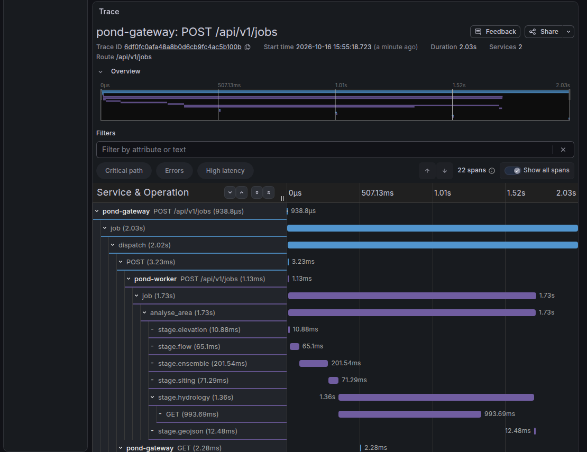
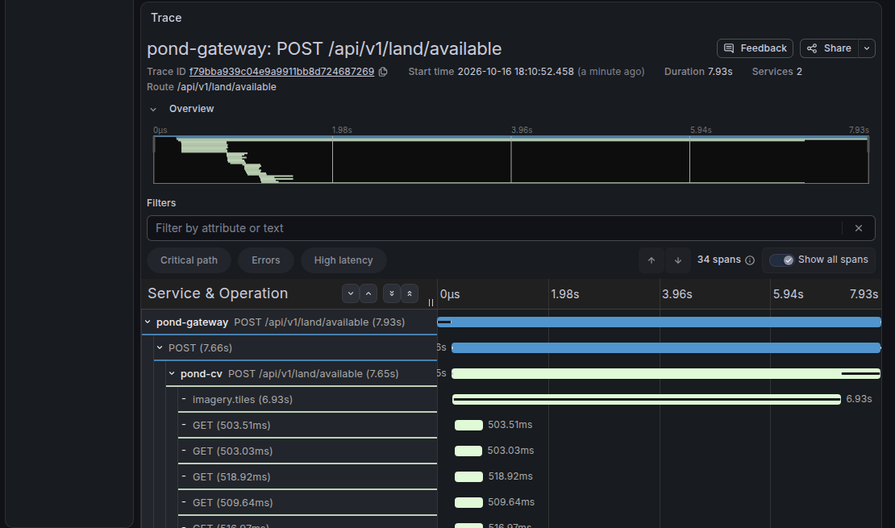
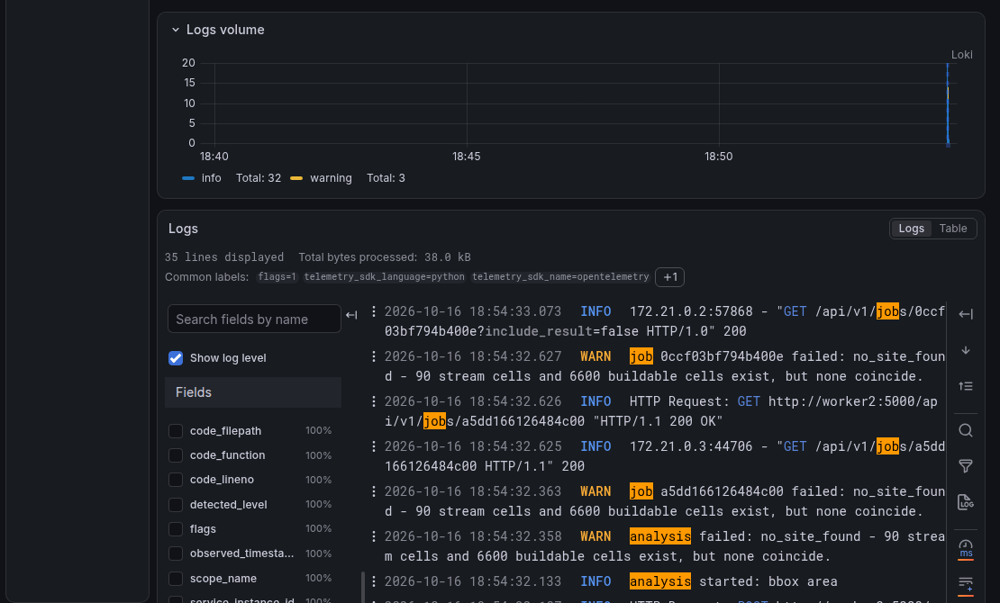

My pond planning system runs as seven containers: a web page, a gateway, three workers, an imaging (CV) service and a Grafana stack. A request crosses several of them. If it is slow or fails, the cause could be in any one.
I added OpenTelemetry to the gateway, the workers and the CV service. It records three things for every request:
The code only calls the OpenTelemetry API. The SDK starts only when OTEL_EXPORTER_OTLP_ENDPOINT is set, and only docker compose sets it.
So the tests and the Render deploy run as before. The main code is in app/telemetry.py. A few lines were added to the pipeline, the job runner and the data providers.
| Part | Tool | Used for |
|---|---|---|
| Instrumentation | opentelemetry-api, -sdk 1.30.0 | Spans, metrics and log records in my code. |
| Exporter | opentelemetry-exporter-otlp-proto-http 1.30.0 | Sends all three signals over OTLP/HTTP. |
| Automatic spans | opentelemetry-instrumentation-fastapi, -httpx, -urllib 0.51b0 | Incoming requests, gateway-to-worker calls, and calls to Open-Meteo and the tile servers. |
| Backend | grafana/otel-lgtm container | Receives OTLP. Stores traces in Tempo, metrics in Prometheus and logs in Loki. |
| Viewing | Grafana, port 3000 | Trace viewer, log search and a dashboard I built (deploy/grafana/pond-dashboard.json). |
| Application | Python, FastAPI, Docker compose | The system being observed. |
otel container. Grafana reads from all three stores.I ran tools/generate_load.sh to produce the data. It sends eight requests: six different areas on the three workers, one repeat that hits the cache, and one area in open ocean that must fail. To repeat this, run docker compose up -d --build and then the script, and open Grafana at localhost:3000 (steps in docs/INSTALL.md).

POST /api/v1/jobs, goes through
job and dispatch, crosses to a worker, and shows each pipeline stage as its own bar. The trace has 22 spans and lasts 2.03 s.
It shows two things: the request is one connected story across two containers, and stage.hydrology is the longest stage.
Its GET child, the call to Open-Meteo, takes 994 ms.
/land/available request. It lasts 7.93 s and has 34 spans. The gateway calls the CV service,
which fetches 30 satellite tiles in parallel under the imagery.tiles span. Most tiles take about 0.2 to 0.5 s. One took 6.0 s and held up the whole request.

no_site_found - 90 stream cells and 6600 buildable cells exist, but none coincide.
The field list on the left shows what each line carries: source file, function, service name and the trace id, which links a log line to its trace.outcome="error" count in the metrics and a WARN log line. All three agree and link by trace id.How OpenTelemetry helps. Monitoring: the metrics and dashboard show the health of the whole stack at a glance. Debugging: a trace shows which container and which stage a request spent its time in, and the logs explain why. Analysis: the same data over many requests shows trends, such as the average time per stage. It uses one open standard for all three signals, so I did not have to write separate code for each, and I can change the backend without changing the application.
/health.admin / admin, which is fine locally only.I used an AI assistant, Claude from Anthropic, on this work. It helped me write the instrumentation code, set up the Grafana stack and dashboard, run the checks and draft this report. It did not design the pond analysis itself, which was built earlier. I ran the tests and measurements on my own computer, and the numbers in this report come from those runs.